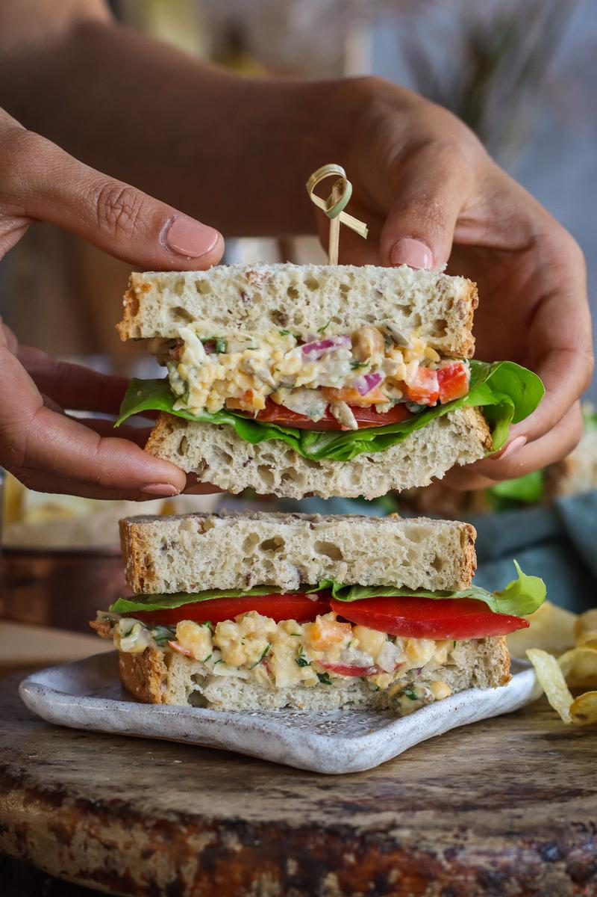

Not what you're looking for? Back to home.
Mashed Chickpeas & Dill Sandwich

Looking for something tangy, refreshing, and filling? This recipe is quick and easy. This recipe is completely vegan and free of most major nut allergens
(peanut, soy, tree and seasame). The filling is also great as a standalone dip.
This recipe makes 3 sandwiches and takes about 10 minutes to make.
Ingredients:
- 1.5 cups of cooked chickpeas
- 1/2 of a bell pepper, minced
- 1/4 of a small red onion, minced
- 1/3 cup of vegan mayonnaise, or more to taste
- 4 tbsp of chopped pickles
- 3 tbsp of roasted sunflower seeds
- 2 tbsp fresh dill, chopped
- 1 tbsp fresh chives, chopped (optional)
- 1/2 a lemon, juiced
- 1 pinch salt, or more to taste
- 1 pinch ground black pepper, or more to taste
Directions:
- In a large bowl, mash the chickpeas with a potato smasher or fork till flaky.
- Add the remaining chickpea mash ingredients to the bowl and mix to combine.
- Serve with your favorite sandwhich fillings. Alternatively, serve as a snack with crackers, veggies, or scooped into a salad.